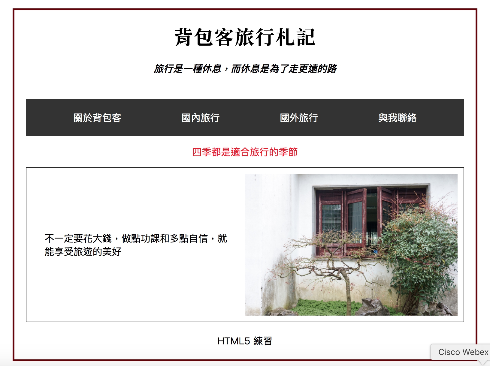
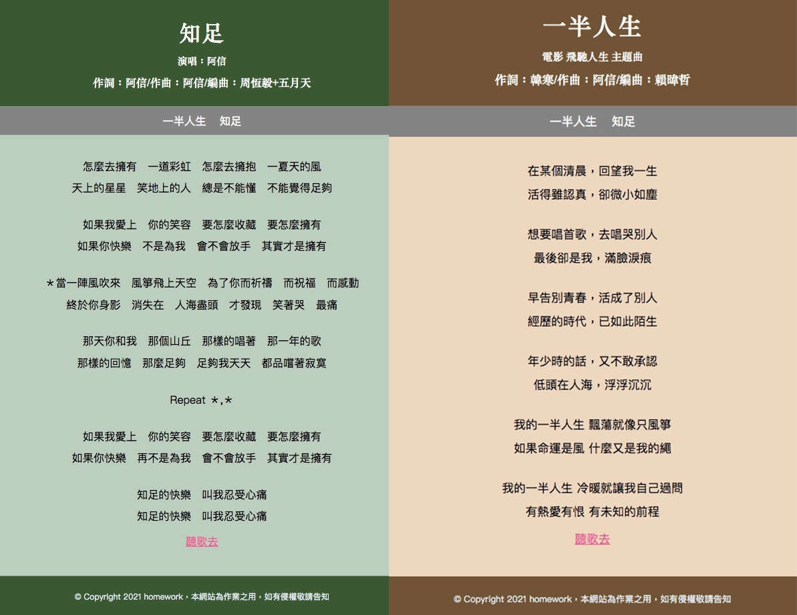

2021/06/31 HTML5
Basics of Web Design
網頁設計製作流程：
* 規劃階段 *
- 擬定網站主題與內容
- 資料的搜集與彙整
- 對象分析與風格
- 設定網站架構的規劃
- 網頁平面草圖的設計
* 網站上傳與維護 製作好的網站經測試可利用 FTP 軟體上傳到網站伺服器中 *
IP 轉換成 Domain Name，需要使用 網域名稱系統 DNS（Domain Name System）。網域名稱第一個為資訊種類（www、bbs、mail、FTP），第二個為主機名稱（seed、nctu、cvtc），後面為領域名稱團體（edu、org、com）及地區（tw、cn、jp）。
HTML5
複習一些語意標籤，太習慣使用 div 了，若以後要搭配 SEO，還是要好好思考一下該搭配怎麼樣的標籤。像是今天有使用 article、section、figuration......。以下為簡單的 HTML 頁面練習。

CSS
接著做了歌詞頁面的範例。我太習慣使用 flex 了，也沒思考就都用 flex，後來才發現這個範例其實全部字體用 text-align: center 就可以達到效果了。（汗顏）

我很少使用表格，所以還是有查一下資料，也複習了:nth-child()，然後當然，要推一下 Amos 老師的教學，每次都獲益良多，這次也是看這篇複習：使用CSS3 :nth-child(n) 選取器教學。
Summary
之前自學過好一陣子的 HTML 與 CSS，所以今天上的還很是得心應手，比較像是在複習，撿回一些比較少用到的標籤與 CSS，還是覺得很有趣的！也是我第一次這麼長時間用網路視訊上課，很是新奇！今後也要繼續加油！